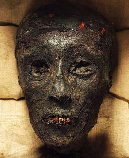

НЕ ТЕРЯТЬ ФОРМЫ
Ни при каких обстоятельствах, даже самых печальных нельзя раскисать и терять форму. Даже если всё очень-очень скверно: вы остались в одиночестве и изоляции, никому не нужны и не интересны, а тут еще и годы норовят взять свое. Может быть, ваш звездный час еще настанет - и все поразятся, как отлично вы держались и сохранились.
Вот о чем побуждает думать этот день. 26 ноября 1922 года археологи Ховард Картер и лорд Джордж Карнарвон проникли в наглухо запечатанную усыпальницу фараона Тутанхамона (XIV век до н. э.), вскрыли саркофаг - а царь лежит там в очень недурном состоянии и даже зубы скалит. Его величество готовился к этому моменту две с половиной тысячи лет и не ударил лицом в грязь.
Сегодня «Тут» - одна из главных мировых звезд. Ездит на гастроли по лучшим музеям, собирает огромные аудитории. При жизни это был мало примечательный правитель Восемнадцатой, прости господи, династии, не оставивший в истории сколько-нибудь заметного следа. А сейчас он да царица Нефертити - два древнеегипетских имени, известных каждому землянину с начальным образованием.
Секрет фитности Тутанхамона таков (записывайте):
- хорошая выдержка;
- крепкий сон;
- строгая диета;
- ни из-за чего не переживать;
- твердо знать, что всё плохое когда-нибудь
закончится.
Тутанхамоновской вам стойкости!